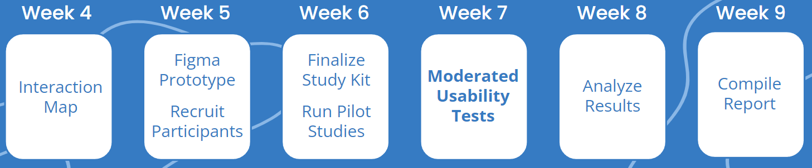

User Testing for Self Declaration Feature
As part of a graduate course in User Centered Design in Winter 2022, our team of 5 from the University of Washington's HCDE Masters program had 9 weeks to design and run usability testing for WA Notify's self declaration feature, which allows users to report positive COVID-19 test results and send exposure notifications to other users who were in recently in close proximity to them. This was in partnership with UW's Clinical Informatics Research Group and the Washington State Department of Health for the WA Notify app, also known as WA Exposure Notifications.
What barriers prevent people from reporting positive COVID-19 test results in WA Notify?
Through our UW HCDE class, the WA Notify client team asked for help with gathering feedback about their new self declaration feature.
| Question | Summary Insights |
|---|---|
| How are users learning about the self-reporting feature in the app? | For participants who had heard of WA Notify, they learned a while ago from news articles, UW communications, social media, and vaccine/test sites, but few participants expressed knowledge of the self-reporting feature or recent updates to the app. |
| How easily do users input positive test results into WA Notify? | Most participants found the interface intuitive and easy to follow to accomplish this goal. |
| What are some key barriers that are stopping users from reporting their positive results? | Many participants expressed privacy concerns and effectiveness of the feature to be key barriers to reporting their positive results. |
| What are people worried about before they are willing to share that they are positive (and are there any information gaps)? | Several participants expressed concern and confusion over what data was being collected and if anonymity would be ensured. |
| Is the interface intuitive? | The interface of the self declaration feature appeared straightforward and seamless to follow for participants, partly based on UI familiarity. |
| Is the level of documentation and messaging on how to use the interface appropriate? | Several participants expressed confusion over technical terms for the process as well as what information would be shared. |
We conducted a user study for each OS, 5 participants for each.
After working with the client to form the research questions, our team created two interaction maps based on the user flow, one map for each of the mobile OS's (iOS and Android).
Based on these flows, we created a digital prototype in Figma for each OS and devised a study kit including the following items: screening questionnaire, communications template, facilitations scripts for interviews, consent agreement, pre- and post-test questionnaires, data collection methods of recording calls, and templates to document responses (including standardized Likert scales for the post-test questions).
For recruitment, we utilized UserTesting and a convernience sample of personal connections, screening for the following: participants who lived in Washington state during the COVID-19 pandemic, used English as their personal phone's system language (since our prototype was in English), and used an iOS or Android as their primary personal phone.
We conducted these semi-structured interviews online, devising two tasks for users to think aloud as they completed: reporting an at-home positive COVID-19 test result through WA Notify, and reporting a positive test result through WA Notify from a clinic that provides a verification code, utilizing the OS prototype matching the OS of their primary phone.
Once we finished collecting data, we collaboratively compiled the findings and created an affinity map to group the findings. Then we devised a system for calculating severity of each issue and finding by factoring in the following: impact criticality, and frequency. These severity scores prioritized our findings, which we compiled into a report and presented to the client as well as our class.
Based on our results prioritized on severity, our team came up with a list of findings and devised a number of suggestions for our client. The following are some of the key findings:
This was my first design project working with an external client. It was surprisingly seamless and flexible working with the client's needs in the scope of an academic class project, while also exciting to work on design problems in practice for tangible user needs. I would be interested to see how design scope can expand beyond a class project.
Given more time and resources, we would have tested a larger sample size, conducted more iterative testing, and worked towards a closer collaboration with the client for more in-depth testing and quantitative data (such as setting up a more realistic test environment for the mobile product instead of a desktop prototype).
{kind=link}
{kind=link}